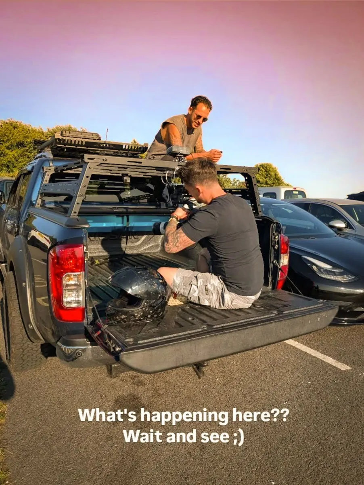
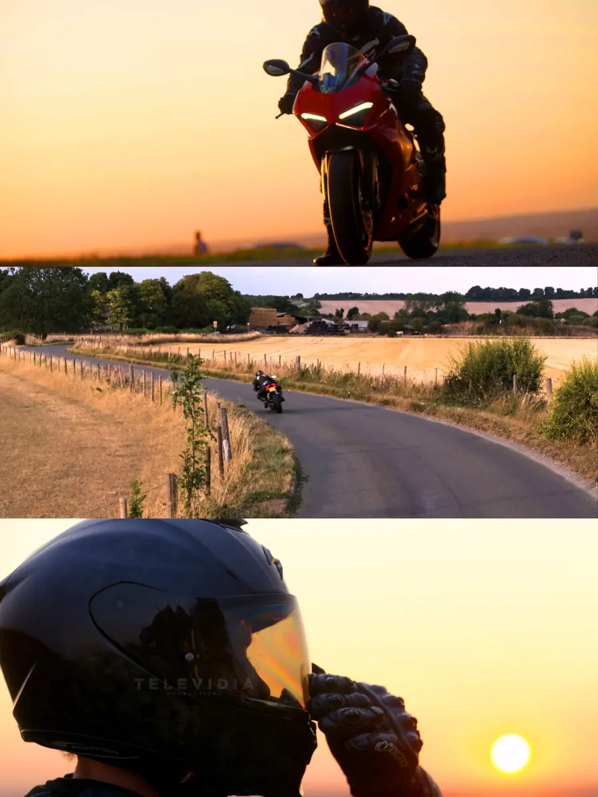
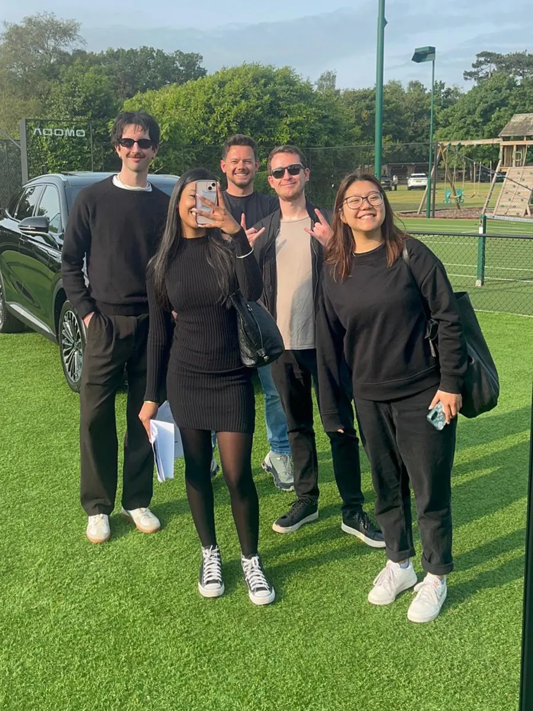
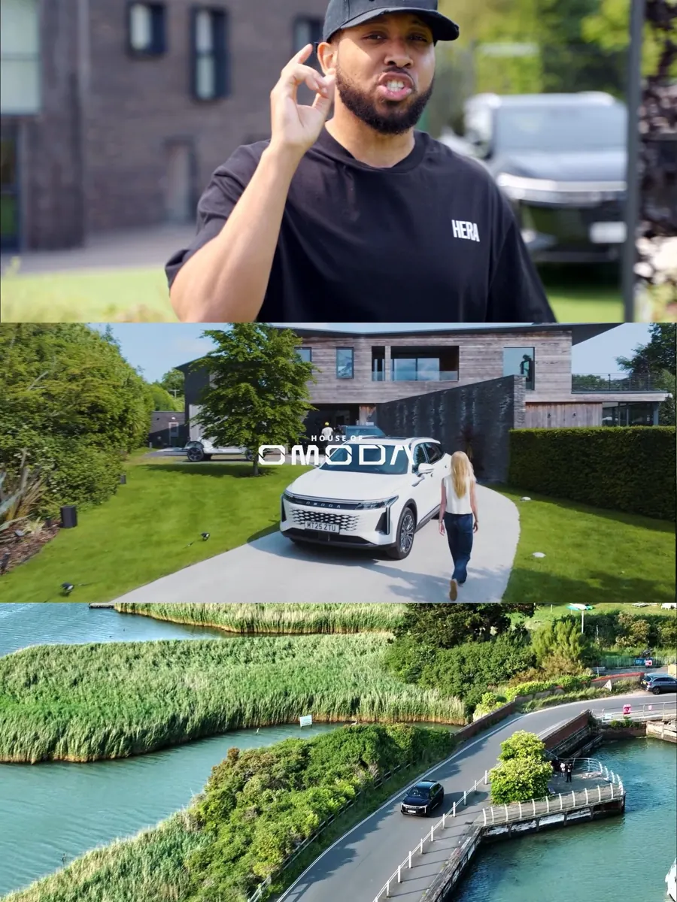
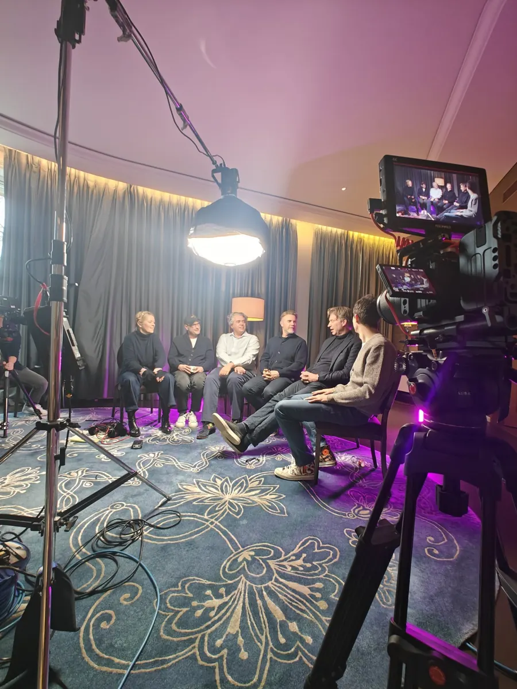
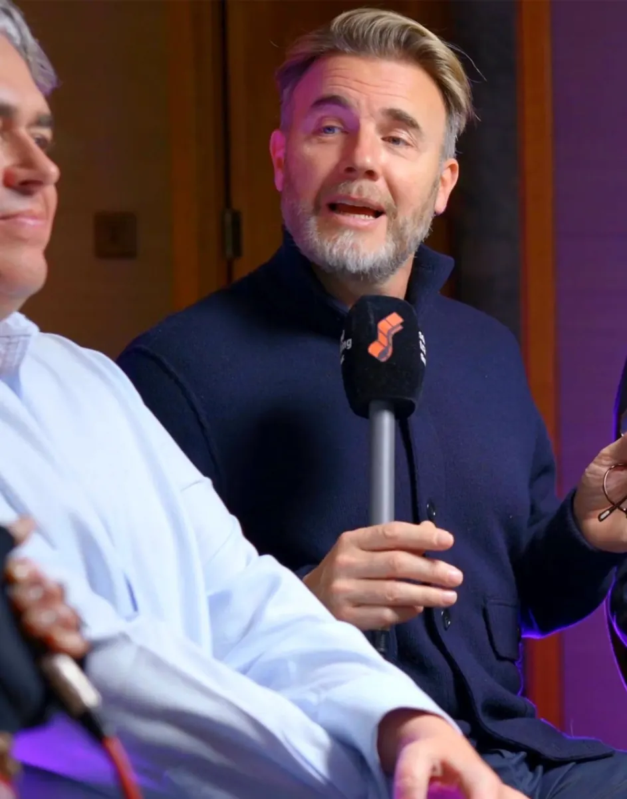
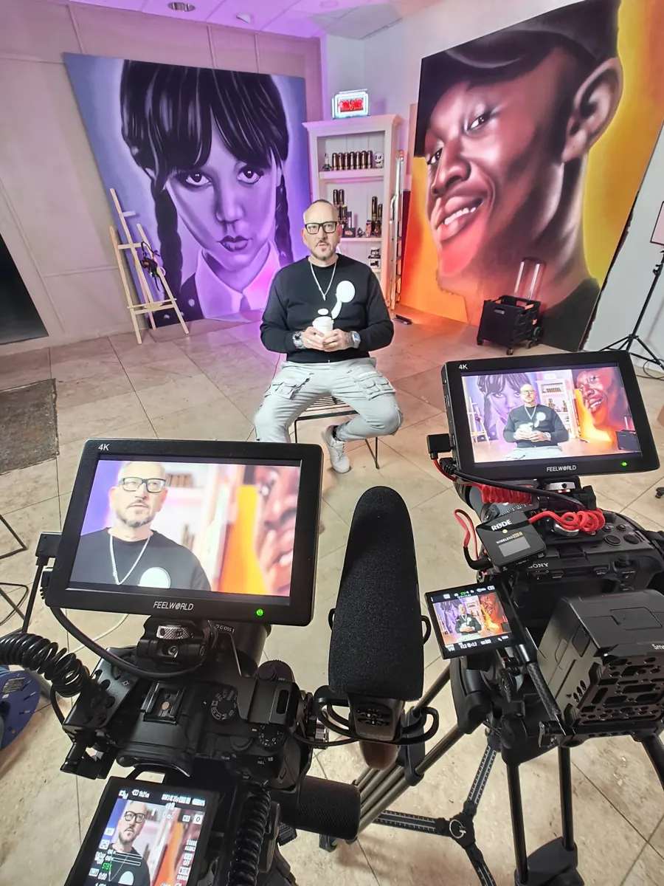
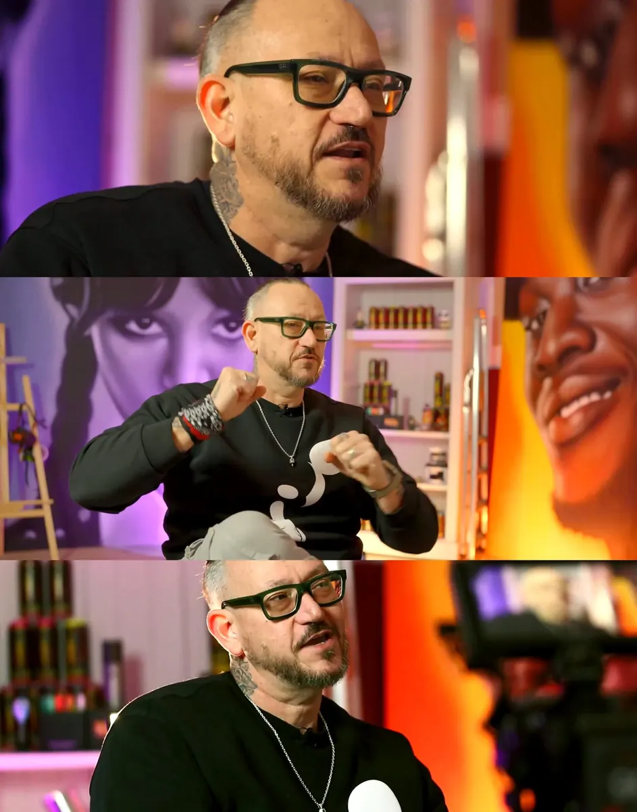
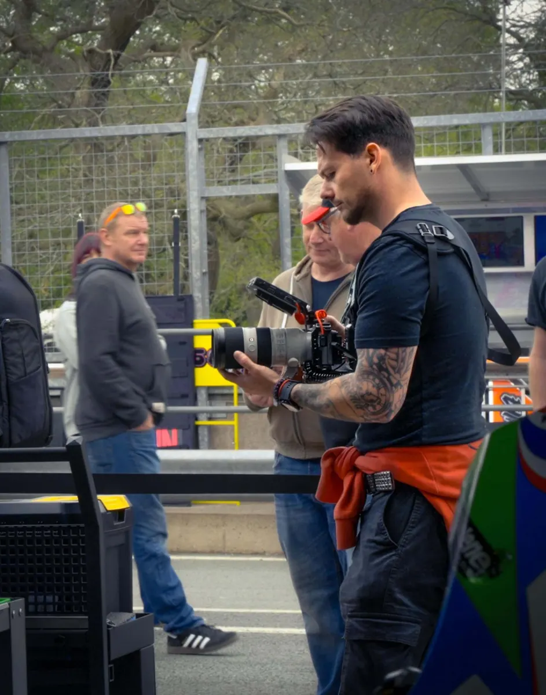

DUCATI


Riding Ducatis, flying drones, and filming out the back of a truck at golden hour. Capturing every curve, speed, and sunset glow. Filmed at Dunstable Downs, Bedfordshire.


Riding Ducatis, flying drones, and filming out the back of a truck at golden hour. Capturing every curve, speed, and sunset glow. Filmed at Dunstable Downs, Bedfordshire.


Filming with the Cubaka crew, shooting for Omoda. Capturing walking interviews, cinematic b-roll and drone footage to create a striking piece of advertising for the House of Omoda.


Podcast snippet for Edith Bowman & Lorne Balfe. Starring Matthew Vaughn, Gary Barlow, Stuart Price and Giles Martin. Discussing the music behind the motion picture.


The official trailer for Urban Outlaw. Starring local St. Albans street artist, Ant Steel. Following his campaign to brighten up the city with beautiful murals that tell stories of the history hidden within.

Fast paced social media content for British Superbikes team, DAO Racing. We’re contracted to follow them around the UK and Spain, documenting their journey through the highs and lows.
My latest documentary. Telling the story of an up and coming world champion Muay Thai fighter, Ciarain Shanahan. Showing the highs and lows of his journey to fame.
Promotional video for Moto Rapido’s British Superbikes race team. Showcasing their new rider and bike for the 2025 season.